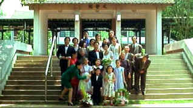

| Yi
Yi (SE) /A-,D |
| Winstar/1999/173/ANA 1.85 |
Listen to the opening piano chords of Edward Yang's beautifully modulated
film Yi Yi and you will have a good inkling of the filmmaking style to come. The piano notes
float effortlessly; there's no artificial strain, no urgent call to attention. The lyrical quality
of the music and the lyrical quality of Yang's film sing eloquently with little extraneous
embellishment.
The Chinese symbols for Yi Yi stands for individually. Yang's film is
about individuals in a family; each is undergoing some crisis, whether related to growing pains of
childhood, the ennui of successful middle age or the longing for a lost past, the Jians must work
it out. There interactions amongst one another reflect what's going on elsewhere in there lives.
Yang builds the stories of the family members on the foundation of a wedding, a
baby christening party and a funeral. In between, the happiest and saddest events, we follow NJ
Jian is his pursuit of a business deal with Japanese game creator Ota in helps of saving the
failing computer software game company in which he's a partner. And to make his life even more
complicated, former high school sweetheart Sherry turns up to rekindle the romantic flames.
Wife Min-Min is lost in dealing with the recent stroke of her mother who rests comatose in their
apartment bedroom. NJ's daughter teenage daughter Ting-Ting meets a new friend and neighbor and
then explores her womanhood. Yang-Yang, NJ's precocious eight-year-old son reconnoiters the waters
of school with delightful humor. Brother-in-law Ad-Di is ever scheming with investments of
his own. As complex as it may sound, director/writer Yang has perfect control over the material.
 |
| The traditional family wedding pose.
©Winstar |
Nien-Jen Wu shines as NJ and young Jonathan Chang is wonderful as
Yang-Yang. Issy Ogata captures Mr. Ota's remarkable resilience. All of the actors shine under
Yang's direction. Yang is so warm in directing style, one must believe this quality is communicated
to his actors. Chen Hsi-Sheng provides some natural humor as Ah-Di, but perhaps Tseng Yi-Hsin
Yun-Yun is a bit too brash and loud.
The relaxed cinematography captures the many moods of Taipei, Taiwan. The city
landscape plays a powerful roll compositionally even though this is a film about personal stories.
There's one beautiful shot as two girls speak in the distance framed under the twin pylons of an
overhead expressway.
At 173 minutes this is a very long film, but it seems short and quick paced to
me. I can't think of higher praise for a film. The fact that I even continued watching it after
realizing the transfer was lousy is another tribute to the magnetic quality of the filmmaking.
It's terribly disappointing to see a beautiful film delivered in
shoddy fashion. The image is never better than soft, colors less than vibrant, and that's not the
worst of it. The transfer is either composite sourced or someone forgot to flag the 2-3 pulldown
information. The jumble of jumping straight edges is a major distraction to the contemplative and
delicate composition of Yang. The yellow English subtitles are the only picture element
delivered in sharp order. What a shame: Winstar, obviously trying to do the right job, delivers an
anamorphic 16 x 9 enhanced transfer plagued by the ghost of DVD disaster.
Edward Yang's commentary provides cultural illumination of the film,
especially for Western audiences. Yang discusses traditional family values, points out when a
funeral is atypical Chinese or provides insights into character motivation.
|
|
|
|

Selections from the Feature Archive include articles on
Akira Kurosawa, Frank
Darabont, Blonde Bimbos, Hollywood Street Gangs, or Vietnam: The
Hollywood Pariah, and many more....
The Exquisite Muse of Zhang Yimou

The powerful image-making of Zhang Yimou has revealed itself in
virtually every film he has made. Coupled with his remarkable collaboration with actress Gong Li,
Zhang's has built a stunning body of work Click the image to read all about it.

Click on the DVD MIA symbol for
profiles of DVDs missing in action.
Add films to the DVD MIA Master List by filling out
a simple form. Click Here


 Have you visited Home Theater
Talk lately? One of the friendliest places on the Net for Home Theater and DVD discussion, you
can get help for installation problems or simply share your opinions with other Vidiots. Have you visited Home Theater
Talk lately? One of the friendliest places on the Net for Home Theater and DVD discussion, you
can get help for installation problems or simply share your opinions with other Vidiots.

ISF Monitor Calibrations in the
Tristate New York area. Lots of hardware info and frequent hardware peaks from video expert Kevin
Miller.They may be judgmental, but that's the point, isn't it. Lots of DVD reviews plus news and
more.

An on-line Home Theater magazine with excellent hardware reviews,
including thorough and responsible research. Check it out.
|